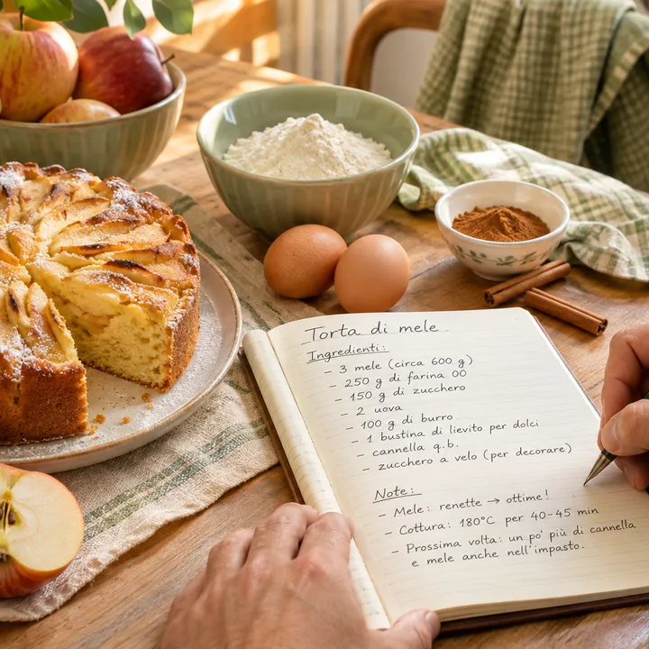

How to save ingredient and recipe notes in EatMeFirst
Add a note to a product, remember who it’s for and find the note in Inventory.

Write down the ingredients or where to find the recipe
“Homemade cake” tells you very little. Try “Apple cake: flour, eggs, milk, apples and cinnamon. Recipe in the blue notebook, page 12.” For a longer recipe, that reference is enough. The note stays with the product.
Remember who it’s for or when you’ll need it
Write “take to Mum”, “for Sunday dinner” or “don’t open: gift”. In Notes and reminders, you can also enter the event date and how many days beforehand you want a reminder.
Where to write and find the note
Add a note while entering a product. To change it later, open Notes and reminders in the consumption screen. To read it, open the product details in Inventory. Write down today what you’ll need to remember tomorrow.
A note doesn’t confirm that food is free of allergens. Keep and check the packaging information for the ingredients you used.